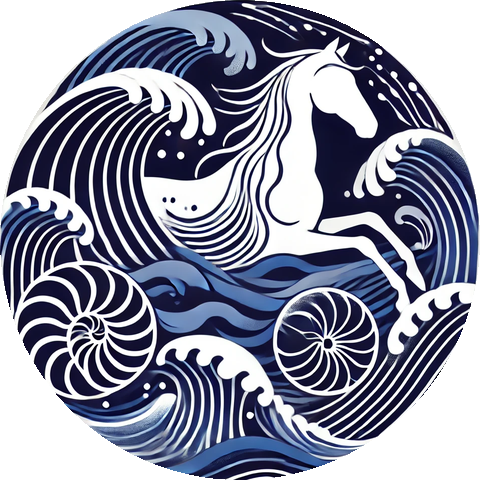

Free, classroom-ready mathematics built on real horse data. Everything here runs in a browser. No barn required.
Interactive apps for students. Open them on any laptop, tablet, or phone.
Choose walk, trot, pace, canter, or gallop and watch a top-down horse whose hooves light up as they touch the ground. Then turn the gait into mathematics: four coupled oscillators whose coupling strength, speed, duty factor, and phase offsets you can change live. Compare your model with 80 real strides recorded on one of our horses.
A horse's heartbeat from standing (36 beats a minute) to gallop (over 200). A beating heart, a scrolling ECG with P, QRS, and T labelled, a heart-rate-variability tachogram, and sliders for heart rate, breathing, wave shapes, and dropped beats. The model is a phase clock with one Gaussian bump per wave (McSharry et al. 2003), tuned to Duque's real ECG. Compare it with his actual recordings standing, walking, and trotting.
Each lesson comes with the data it needs. Notebooks open in Google Colab with one click and run for free; slides and worksheets download from GitHub.
Read a horse's ECG, measure heart-rate variability, and build a beat from a clock and five bumps. Students match the model to Duque's real recordings and find the beats the strap missed. Worksheet, teacher guide, answer key, and slides included.
Gaits as coupled oscillators. Students use the web app to measure footfall timing, then describe the rhythm with period, frequency, and phase. Worksheet, teacher guide, answer key, and slides included.
The deeper, computational follow-up to the Horse Heart Lab: a real electrocardiogram from Duque, one of our horses, and a classic oscillator model. Students explore nullclines and the phase plane, then tune the model to the horse's heartbeat.
Real sensor data from a walk and a trot, and a phase model that explains why the legs move the way they do. Students fit the model, then test it on strides they have not seen.
Ninety days of heart-rate data from Duque's lunging sessions. Students compute heart-rate variability, compare rest with work, and ask what the numbers say about fitness and recovery.
Notebooks our students use for their own research projects. Copy one, point it at your data, and go.
Load a heart-rate recording from a horse listening to music, clean it, and compute heart rate and heart-rate variability over time. Rename the notebook with the horse, date, and time of your session.
Turns a student's data and video into a short reel for presenting results: plots synced to the footage, titles, and captions. Built for end-of-course presentations.
You don't need horses, a barn, or special software. Here is how a lesson usually goes.
Click "Open in Colab". It runs in your browser on Google's computers. Students need a Google account and nothing else.
Nobody has to write new code. Students change a few numbers, re-run, and watch what happens to the horse.
Each lesson has a short slide deck to introduce the horse and the question, and a worksheet to collect answers.
Everything is released under the MIT License. Adapt freely; please credit EquiPhysics. Questions or results to share? Write to laura_miller@equiphysics.org.
All measurements come from our own horses, recorded at the University of Arizona's Al-Marah Equine Center in Tucson before the program moved to Rancho del Nido in Sonoita, Arizona. They were collected noninvasively with wireless motion sensors and standard heart-rate monitors under approved animal-care protocols.
Per-stride timing and symmetry from a sensor session on Duque (walk and trot).
A raw electrocardiogram recording from Duque, used in the Van der Pol lesson.
Heart-rate and HRV recordings from 90 days of exercise sessions.
Everything here is free. If a lesson helps you, you can donate to EquiPhysics. Can't give right now? You can still help a lot. Share a lesson with a teacher, and follow us on GitHub, Instagram, Facebook, and LinkedIn. Follows and shares help us show grant funders that people use and value this work. For news a few times a year, sign up here.